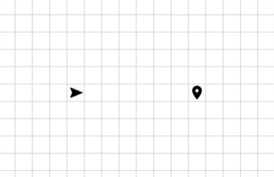
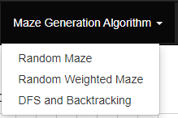

Welcome To
Pathfinding and Maze Generation World
By Ismail El Shinnawy
This web app is made to visiualize different Pathfinding & Maze
Generation
Algorithms. The source code for this project is available at
this
Github
repo.
The project is inspired from Clément
Mihailescu
project
.
This is a short tutorial to walk you through using the app, but you can skip it if you want :)
Moving Start and End
You can change the start and end positions by simply dragging and dropping
the
icons

Different Maze Generators
Maze generators
- Random Maze: Randomly scatters walls over the grid
- Random Weighted Maze: Randomly scatters weights over the grid
- DFS and Backtracking: Generates a random maze that is guranteed to have a path from
start to
end
You can choose the generator that you want to visiualize from here and it will automatically
start

And that is it 🥳!! You can start experimentting on your own now. :)
you can always come back to the tutorial using the button at the top
right